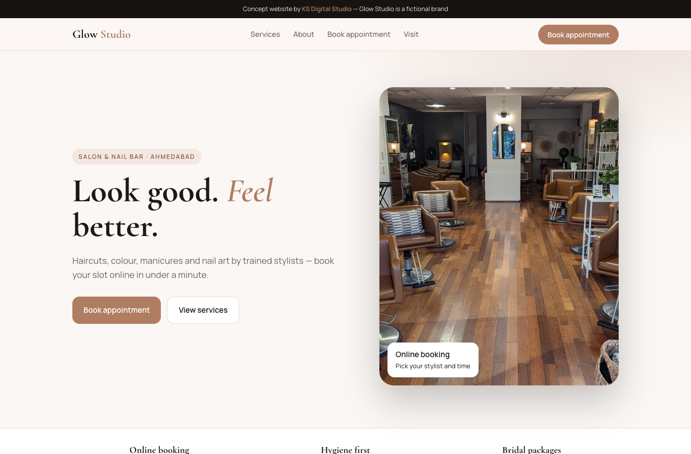

In force since 28 June 2025 for e-commerce and many consumer services sold in the EU (micro-enterprises are largely exempt). National authorities can order fixes and impose penalties; courts have already ordered major retailers to fix their sites.
Thousands of website accessibility lawsuits are filed every year, many more demand letters are sent, and most targets are small and mid-sized businesses — especially online stores.
Why it matters: Some text doesn't have enough contrast with its background, so people with low vision can't read it.
How to fix: Darken the text or lighten the background until the contrast ratio is at least 4.5:1 (3:1 for large text).
WCAG 1.4.3 · rule color-contrast · guidance
<button class="cta-s" data-demo="">Book appointment</button><a class="btn btn-p" href="#book">Book appointment</a>Why it matters: Parts of the page aren't inside header/nav/main/footer regions.
How to fix: Place all content inside semantic landmark elements.
WCAG Best practice · rule region · guidance
<div class="ribbon">Concept website by <a href="https://www.ksdigitalstudio.in" target="_blank" rel="noopener">KS Digital Studio</a> — Glow Studio is a fictional brand</div>KS Digital Studio fixes accessibility issues directly in your website and re-tests until it passes. Fixed-price quote within 24 hours.
info@ksdigitalstudio.in · www.ksdigitalstudio.in
Automated tools find roughly a third to a half of accessibility problems; a full audit also needs manual keyboard and screen-reader testing. This report checks one page with axe-core 4.10 (WCAG 2.0/2.1/2.2 A & AA rules). It is not legal advice or a certificate of compliance.